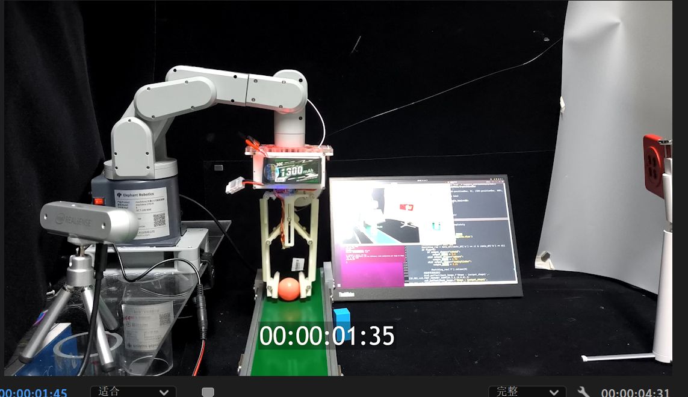

Scientific Research
在科研领域，我致力于探索各种有趣的课题，不断挑战自我，追求知识的边界。以下是我详细的研究项目和成果展示。
Aerospace Gripper
研发时间：Shanghai · 2024.09

本项目专注于设计和开发一款适用于航空航天领域的高性能抓取器。
- 采用新型材料，减轻重量的同时提高了抓取器的强度和耐用性。
- 创新的机械结构设计，使其能够适应复杂的太空环境并完成高精度的抓取任务。
- 通过模拟实验和实际测试，验证了该抓取器在多种场景下的可靠性和稳定性。
Resilient Machine
研发时间：Shanghai · 2025.01

旨在打造一款具有高韧性和适应性的智能机器，以应对复杂多变的工作环境。
- 运用先进的传感器技术，实现对环境变化的实时感知和快速响应。
- 独特的算法优化，使机器在面对突发情况时能够自主调整策略，保持稳定运行。
- 经过多轮实地测试，该机器在极端条件下展现出了卓越的性能和可靠性。
Origami Machine
研发时间：Guangzhou · 2024.12
探索将折纸艺术与机械工程相结合，开发出具有独特变形能力的折纸机器。
- 基于折纸原理设计的可折叠结构，实现了机器在不同形态之间的快速转换。
- 采用智能控制技术，精确控制折纸过程，确保机器的准确性和稳定性。
- 该项目成果为未来的空间探索和微型机器人领域提供了新的思路和方法。